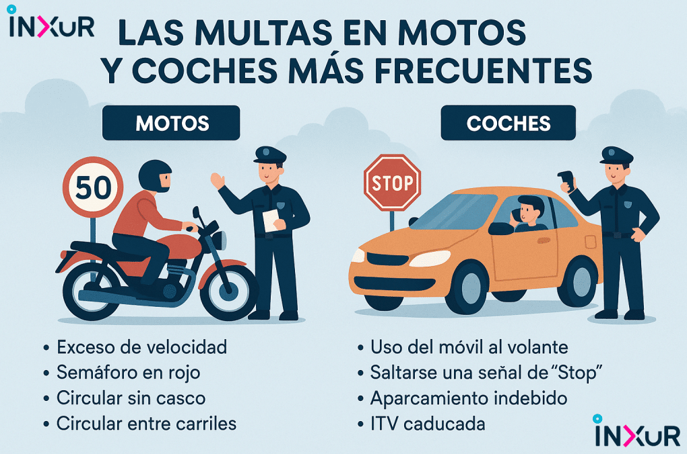

1. Mirar los retrovisores a menudo para estar al tanto de la situación de la vía.
2. Mantener siempre la distancia de seguridad.
3. Señalizar con antelación los cambios de carril y las maniobras.
4. Circular de forma suave y segura en todo momento.

1. Mirar los retrovisores a menudo para estar al tanto de la situación de la vía.
2. Mantener siempre la distancia de seguridad.
3. Señalizar con antelación los cambios de carril y las maniobras.
4. Circular de forma suave y segura en todo momento.
Máx. 90 km/h y mín. 45 km/h.
Hay que circular con precaución y respetar la señalización.

Máx. 50 km/h y mín. 30 km/h.
Hay que reducir la velocidad en zonas con peatones y cruces.

Máx. 120 km/h y mín. 60 km/h.
Hay que cambiar de carril con antelación y usar intermitentes.

Máx. 120 km/h y mín. 60 km/h.
Hay que mantener distancia de seguridad y circular por el carril adecuado.

Revisar los retrovisores constantemente para garantizar la seguridad.
Conducir con suavidad y evitar maniobras bruscas.
Respetar los límites de velocidad y la prioridad de paso.

Uso incorrecto de intermitentes: 200€.
Exceso de alcohol: hasta 6 puntos.
Drogas con accidente: 6 puntos y 1000€.
